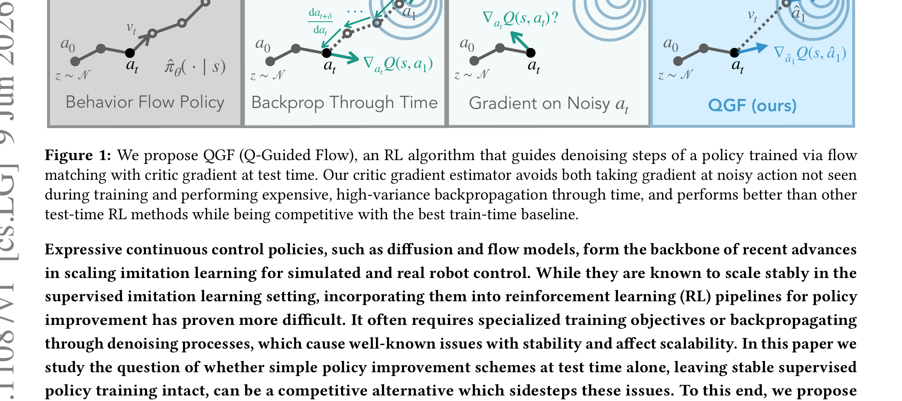

Test-Time Gradient Guidance of Flow Policies in Reinforcement Learning
Zhou 等 · UC Berkeley / Physical Intelligence · 2026 · arXiv:2606.11087 · Zotero MI6IC569
它把策略优化从参数空间搬到单次采样轨迹，代价是每次动作都要额外反传 critic。
§1 Introduction：作者为什么必须做这篇工作
flow policy 在监督模仿中易扩展，进入 RL 后却常需要特殊 loss 或反传整条 flow trajectory。作者反过来问：如果参考 policy 与 critic 都能稳定预训练，是否完全不用训练 actor，只在推理时沿 Q 梯度修改采样轨迹？
QGF 保持 behavioral flow policy 冻结。每个 flow step 先按参考速度前进，再根据 critic 对预测干净动作的梯度做小幅修正。策略改进发生在 test time，因此没有 actor–critic 联合训练的漂移，也能随模型规模增大保持稳定。
展开原文 · 核心动机
“policy optimization entirely at test time”
§2 Related Work：它接在哪些路线之后
classifier guidance 和 diffusion guidance 已证明生成时可沿条件梯度偏转样本；offline RL 的 CQL/IQL 则训练 critic 后提取 policy。QGF 把两者结合：critic 提供方向，flow sampler 执行更新。
与 Guided Action Flow 的 VLA 版本相似，QGF 更强调通用连续控制；与 Q-VGM 把 Q-gradient 蒸馏回速度场不同，QGF 每次推理都需要 critic，但无需再训练 actor。
§3 问题设定：状态、动作与反馈
参考 flow policy 与 critic 分开预训练。采样时从噪声开始，每一步计算参考速度、估计最终动作并求 Q 对动作的梯度，然后把梯度注入当前 flow state。
§4 方法总览：沿原图走一遍
上一节确定了学习接口；现在看论文原图，追踪观测如何变成动作、环境反馈又如何回到可训练模块。

1. 行为克隆训练参考 flow policy
先用标准行为克隆训练 reference flow policy，它定义数据支持的动作流形。QGF 不修改这套参数，所以监督训练的稳定性和规模化能力被完整保留。
输入是什么：随机噪声，以及当前画面、语言指令或机器人状态等条件信息。噪声只是生成过程的起点，不是机器人真的要执行的动作。
这一步究竟做什么：先用标准行为克隆训练 reference flow policy，它定义数据支持的动作流形。QGF 不修改这套参数，所以监督训练的稳定性和规模化能力被完整保留。
输出到哪里：参数得到更新的模型，或能供下一轮训练使用的新监督信号。这个结果会交给下一步“离线数据训练动作价值 critic”继续处理。
为什么不能省略：前面的数据或分数本身不会自动改变模型；必须通过损失函数把误差信号变成参数更新。
2. 离线数据训练动作价值 critic
再用离线转移训练动作价值 critic，并检查它对候选动作有正确排序。critic 的值本身不是唯一重点，QGF 真正使用的是对动作的梯度，因此还要验证梯度不会指向明显 OOD 区域。
输入是什么：来自上一步“行为克隆训练参考 flow policy”的产物：参数得到更新的模型，或能供下一轮训练使用的新监督信号。本步骤还会按论文设置读取当前条件、时间步或训练信号。
这一步究竟做什么：再用离线转移训练动作价值 critic，并检查它对候选动作有正确排序。critic 的值本身不是唯一重点，QGF 真正使用的是对动作的梯度，因此还要验证梯度不会指向明显 OOD 区域。
输出到哪里：一个分数、奖励或价值估计，用来比较候选，而不是直接控制机器人。这个结果会交给下一步“每个采样步估计干净动作及其 Q 梯度”继续处理。
为什么不能省略：只有生成候选而没有评价标准，模型不知道哪个结果更好；这一步把‘好坏’变成可比较的学习信号。
3. 每个采样步估计干净动作及其 Q 梯度
每个 flow step 都从当前中间态估计最终干净动作，再对该动作求 $ abla_a Q$。这个梯度表示局部提高价值的方向，经过时间相关缩放后注入当前 velocity。
输入是什么：来自上一步“离线数据训练动作价值 critic”的产物：一个分数、奖励或价值估计，用来比较候选，而不是直接控制机器人。本步骤还会按论文设置读取当前条件、时间步或训练信号。
这一步究竟做什么：每个 flow step 都从当前中间态估计最终干净动作，再对该动作求 $ abla_a Q$。这个梯度表示局部提高价值的方向，经过时间相关缩放后注入当前 velocity。
输出到哪里：一个或多个候选未来、动作或轨迹，以及必要的中间状态。这个结果会交给下一步“在不改参数的情况下引导到更高价值动作”继续处理。
为什么不能省略：只有生成候选而没有评价标准，模型不知道哪个结果更好；这一步把‘好坏’变成可比较的学习信号。
4. 在不改参数的情况下引导到更高价值动作
最终动作由被引导的采样轨迹产生，actor 参数始终不变。优点是无训练期 actor–critic 不稳定；代价是每次推理都要额外运行 critic 和反向梯度，且错误 critic 会直接扭曲动作。
输入是什么：来自上一步“每个采样步估计干净动作及其 Q 梯度”的产物：一个或多个候选未来、动作或轨迹，以及必要的中间状态。本步骤还会按论文设置读取当前条件、时间步或训练信号。
这一步究竟做什么：最终动作由被引导的采样轨迹产生，actor 参数始终不变。优点是无训练期 actor–critic 不稳定；代价是每次推理都要额外运行 critic 和反向梯度，且错误 critic 会直接扭曲动作。
输出到哪里：一个或多个候选未来、动作或轨迹，以及必要的中间状态。这是图中这条链路的最终产物，随后会进入真实执行、模型更新或指标评测。
为什么不能省略：它把前面得到的内部结果落实为可执行动作、可训练模型或可解释指标，完成从方法到结果的最后一步。
§5 机制细拆：为什么这个接口可能有效
critic 把任务回报变成动作空间局部梯度；不同 flow step 共享这一方向但可使用时间相关强度。
训练期不更新 actor；推理期修改采样状态，critic 保持冻结。
它把策略优化从参数空间搬到单次采样轨迹，代价是每次动作都要额外反传 critic。
§6 目标函数：公式逐项读
下面的教学化表达抓住论文的主要更新方向；读它时不要只看符号，要检查回报作用在哪个变量、哪些部分保持冻结。
- $v_\theta$
- 冻结参考 flow 的原始速度。
- $\hat a_0$
- 从当前中间态估计的最终干净动作。
- $\nabla Q$
- critic 指出的局部增值方向。
- $\lambda_t$
- 各流步骤的引导强度；过大可能离开数据流形。
§7 训练与评测：数字在什么条件下成立
单任务和 goal-conditioned offline RL 高维动作基准；比较训练时 actor-critic、采样重排与其他 test-time guidance。
| 学习接口 | 参考 flow policy 与 critic 分开预训练。采样时从噪声开始，每一步计算参考速度、估计最终动作并求 Q 对动作的梯度，然后把梯度注入当前 flow state。 |
|---|---|
| 信用分配 | critic 把任务回报变成动作空间局部梯度；不同 flow step 共享这一方向但可使用时间相关强度。 |
| 更新范围 | 训练期不更新 actor；推理期修改采样状态，critic 保持冻结。 |
| 实验覆盖 | 单任务和 goal-conditioned offline RL 高维动作基准；比较训练时 actor-critic、采样重排与其他 test-time guidance。 |
§8 结果怎么读：证据与归因
论文报告 QGF 优于既有 test-time 方法，并与训练期算法有竞争力；还显示随 policy 容量提升不会出现同等程度的 actor 训练不稳定。
§9 复现与工程检查
critic 必须在独立验证集检查动作梯度方向；报告每次动作的额外反传延迟；扫描 $\lambda_t$ 并检查 OOD action 比例。
- 先复现冻结的 SFT/BC 基线，再打开 RL 或偏好更新。
- 同时记录环境步、墙钟时间、人工干预、策略版本和推理延迟。
- 逐任务保存失败轨迹，避免平均成功率掩盖分布偏移。
§10 适用边界与研究启发
critic 错误会在推理时直接放大；每个 flow step 求梯度增加延迟；没有把改进蒸馏回 policy，因此部署始终依赖 critic。